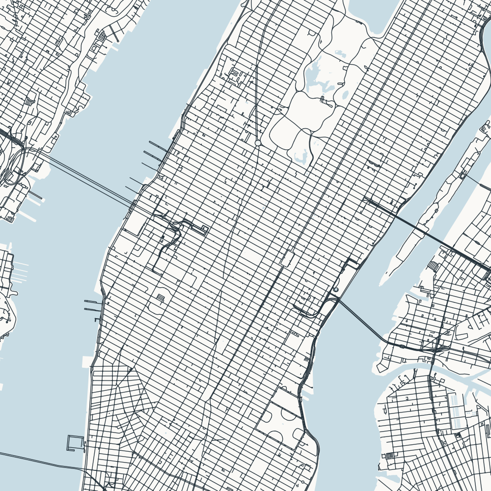

7 × 7 km · North up · Review copy (answer shown)

Manhattan’s famous street grid was planned in 1811, but it took about 60 years to build it as far north as 155th Street.
Check streets, water, framing, and phone-size readability before enabling this puzzle in puzzles.json.